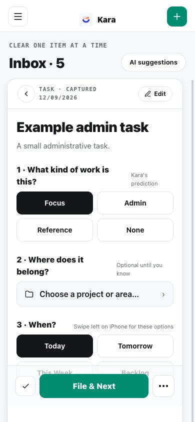
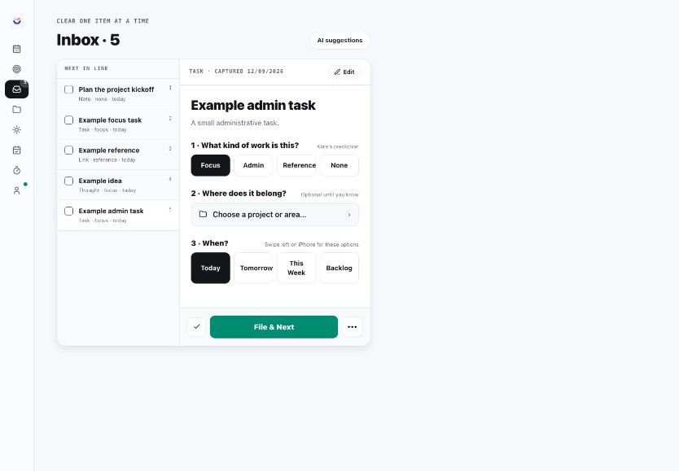

Deep Focus productivity. One place for today's priorities, agenda, inbox triage and weekly review, on Mac, iPhone and iPad, with a Telegram agent doing the legwork. Newest first.
livelatest: v0.4.0-beta.17 · 31 October 2026user guide →
V0.4.0-BETA.17 · 31 OCT 2026
Notes on today, a meeting or a project, and each project gets its own page
A note now sits where you are: on today, on a meeting, or on a project. And a meeting can belong to a project, so its notes and next actions land there without filing anything.
Which project a meeting belongs to is kept on each Mac for now, not shared between them yet.
Write instead of Paper.Paper is no longer in the menu. The Write button at the top of the sidebar (or ⌘J) opens the live meeting's note during a meeting, otherwise today's note.
Put a meeting on a project.Every meeting has a small "+ Project" chip next to "+ Note", on Today, in Days and in the post-it. Pick a project once; Kara asks whether the next meetings in the series keep it.
"+ " lines go where they belong.On a meeting that belongs to a project, or on a project's own note, a "+ " line becomes that project's next action. On today's note it's still a task in your Akiflow Inbox.
A page for each project.Click a project's name in Projects: Done when (edit it right there), next actions, what you're waiting for (from the "@name" lines in its notes), and all its notes, newest first, including its meetings'. "+ New note" starts a note on the project. Linked, on the right, shows what else belongs to it in Notion and hides in one click; paste a link to add one.
Every note in Notion too.A few seconds after you stop typing, each note is saved in your Notion Notes database with its date, type and project. A meeting note shows "In Notion" with the time.
V0.4.0-BETA.16 · 31 OCT 2026
Your projects and their next actions, on one list
"Projects" is new in the sidebar. It shows every active project from your Notion as a card with its next actions. Nothing else: a project, and what moves it forward.
Clicking a project's name opens it in Notion for now. A project page with notes and linked material comes next, after a look at Paper.
Connect Notion once.The first time, Projects asks you to connect your Notion. It's also in Settings.
Add a next action.Type under a project and press Enter. It's saved in Notion with the project's code, lands in your Akiflow Inbox within a few minutes, and Kara files it under the Akiflow project with the same name or code. A small "to Akiflow" dot shows until it has arrived.
Tick it off here or in Akiflow.It's done in both. Undo is there for a few seconds.
No next action is fine.Such a project gets a small "no next action" flag, nothing more. Some weeks a project just waits.
Later, Done or Dropfrom the ••• on a project. Done and Drop ask once when next actions are still open, then offer Undo. Later projects are folded at the bottom, with "Make active".
+ New project.Just a name: Kara makes the code and creates it in Notion as Active. If Akiflow has no project with that name yet, Kara says so once, with a "Copy name" button.
When Notion doesn't answer,your last list stays on screen and new next actions wait and are sent once it's back.
V0.4.0-BETA.15 · 30 OCT 2026
Read back any past day, and add notes to it
Kara can now go back in time. Open "Days" in the sidebar, or "‹ Yesterday" on Today, and move between days with ‹ ›, the arrow keys or the week strip.
Also in this version:
Granola summaries don't show yet: the sweep that brings them into Kara saves the wrong part of Granola's reply. A fix is in progress. Until then, each Granola meeting has an "Open in Granola" link.
Your notes first.The day's paper and any pages you wrote that day. "+ Note" still adds a line to that day, and "+ " lines still become Akiflow tasks.
The meetings you were in.Each one shows who was there, your notes, its Granola or Fathom summary and a link to the recording. You can add a note to a past meeting too.
Team meetings.Fathom calls you weren't in, at the end of the day, each with its summary.
Done, not done, suggested.What you ticked off in Akiflow that day, what was planned and not done, and what Kara suggested from mail and meetings.
Today's 3.How each one ended: done that day, done later, or not done.
The focus ticker starts againafter you stop it. It now plays the recording a bit at a time instead of loading it whole.
Granola meetings match your calendareven when the title has "<>" in it, on Today too.
V0.4.0-BETA.14 · 29 OCT 2026
The focus timer ticks again
The Pomodoro settings let you pick a soundscape and a volume, but the Mac app never played anything. Now it does, the same way the iPhone app does.
It plays while the timer runs.The sound starts with a focus session and stops when you pause, reset, or the time is up.
Five sounds.Pomodoro ticker plays the egg-timer recording from the iPhone app. Rain, White noise, Brown noise and Ocean waves are generated.
Try before you choose.In Settings, picking a sound or letting go of the volume slider plays ten seconds of it. Changes during a session apply at once.
One Mac at a time.The sound plays only on the Mac where you started the timer.
V0.4.0-BETA.13 · 29 OCT 2026
Akiflow tasks show once on Today, not twice
When you plan a task at a time in Akiflow, Akiflow also puts it on your Google Calendar. Today showed that task inside its Akiflow slot and again as a meeting.
One card per task.Google Calendar copies of Akiflow tasks are now hidden, the same way copies of Akiflow slots already were. A copy is an event with the same title and start time.
Real meetings stay.An event with other guests always shows, even when its title and time match an Akiflow task.
Meeting notesno longer treat these copies as meetings, so Kara won't ask for notes on "Send BoardPack".
Nothing changes in Akiflow or Google Calendar.The events stay there, so your colleagues still see the time as busy.
V0.4.0-BETA.12 · 29 OCT 2026
One paper for the day, from a few words to a whole briefing
The Day note, the scrap paper and the header's Capture, Task and Note are now one paper. Write anything on it: a few words, a list, or a long briefing.
On Today."Today's paper" sits at the top with its first lines. Click it to open it.
Post-it (⌘J).Press ⌘J on any screen, Meeting mode included, or click Paper in the sidebar. The post-it grows as you type. Drag it where you want it, or shrink it to a pill with ", ". Past about 10 lines it offers to open as a page.
Page and Full.Page sits beside Today, with an outline from your "# " headings and a word count. Full fills the window for a long document. Esc steps back down: Full, Page, Post-it, hidden.
Same rules as before."+ " makes an Akiflow task, "@name" a waiting-for, "! " a decision. A line is handed on once, when you press Enter at its end or hide the paper. "+32 478 ..." stays a note. Headings and these lines are coloured as you type.
Pages of their own."+ Page" starts a separate page, for a briefing or a document, so it doesn't bury the day's scraps. Closed pages stay in the Notes view.
The live meeting's notesare a tab on the paper during a meeting.
One mic.The mic on the paper adds what you say as a new line.
Close the dayasks only about plain lines still on the paper: Task, Keep (to the top of tomorrow's paper) or Toss.
Nothing is lost.Your old Day note lines and the scrap paper text show up on that day's paper. Tasks already sent are not sent again.
V0.4.0-BETA.11 · 28 OCT 2026
A scrap paper for the day, one keystroke away
Scrap paper.Press ⌘J on any screen, Meeting mode included, or click Scratch in the sidebar. A plain page slides in for half-thoughts, a phone number, a list you'll throw away tonight. Nothing on it turns into a task unless you say so. One page per day, saved as you type and synced to your other Mac. Esc hides it.
Turn a line into something.Put the cursor on a line: "This line → Task" sends it to your Akiflow Inbox, "→ Day note" moves it to today's Day note as a plain note (a line starting with + stays a note).
Close the day sorts what's left.Review › Close the day lists the lines still on the paper. Each one becomes a Task, is kept on tomorrow's page, or is tossed (with Undo). "Toss the rest" clears it, so the paper starts clean each morning.
Triage says when its Todoist project is missing.If "Kara, Suggested" is gone, Triage now says so instead of looking clear.
The health line watches the meeting sweep.A red line on Today when no sweep ran for a day, or when its writes keep failing.
V0.4.0-BETA.10 · 27 OCT 2026
Add a new task to Today's 3 straight from the Review
Type a new one into Today's 3.In Review › Start the day, the search field now also creates. Type what you want to do; if Akiflow has no task by that name, press Return (or "+ New in Akiflow, today"). Kara creates it in Akiflow, planned today with no time, tags it "today" and picks it. It then shows on the agenda like any other task, and its time chip moves it.
Task names are readable again.On a task row the name comes first and can take two lines; the parent task and the project sit small underneath. In a narrow window the time and buttons move under the name instead of squeezing it. The same goes for the Behind schedule card.
V0.4.0-BETA.9 · 27 OCT 2026
Move a task from its time, and open any item with its context
<!-- screenshot: the When / At / For popover --> <!-- screenshot: Behind schedule card --> <!-- screenshot: a meeting's full view with its context -->
Click a task's time to move it.The time on a task row ("12:00 · 30m ▾") opens When, At and For. Pick the next free slot, later today, tomorrow, this week or a date, then a time free between your meetings, and how long. It saves to Akiflow at once.
Behind schedule.At the top of Schedule and Day, the tasks whose time has passed, and the ones overdue from earlier days. Each one has one-tap moves (the next free slot, tomorrow 09:00, this week) and Done. "Move all to free time" puts them one after another into today's free time.
One Hide menu.Skip and Hide always are now one Hide ▾: Hide today (only in Kara, the calendar is unchanged) or Hide every time. An Undo toast follows, and Show at the top brings hidden items back.
↗ beside the block nameopens the block in Akiflow. The "Plan in Akiflow" button is gone.
The name opens the full view.Click an item's name in Schedule, or "Open ›" in the Day peek and on Notes dividers. Your notes are on the left. On the right is the context: for a meeting, who is invited, the join link, the invite's agenda, what was said last time and its actions, and related Akiflow tasks. After the meeting, the recap shows at the top. A block shows its tasks. Press "]" (or Context) to fold the context away, and Esc to go back.
Move the window from any header.Drag Kara by its top bar on the Mac, and double-click it to zoom.
V0.4.0-BETA.8 · 27 OCT 2026
Add a note to anything on your agenda, and open it full screen
<!-- screenshot: a Schedule card with its notes and + Note --> <!-- screenshot: an item full screen -->
+ Note everywhere.Every item in Schedule (a meeting, an Akiflow block, a timed task) shows its notes and a + Note. Write a line, a "+" task, an "@" waiting-for or a "!" decision, press Return, and the field closes. Esc cancels.
The Day view too.A click on any block opens its peek: its tasks, its notes, + Note and Focus. Blocks with notes show a small count.
Full screen for any item.The ⤢ on an item opens just that item and its notes, and for an Akiflow block its tasks, with nothing else from the day. Esc brings the day back.
V0.4.0-BETA.7 · 27 OCT 2026
Edit your notes and tasks right where they are, and open tasks in the Akiflow app
Everything you change shows at once. When Akiflow is out of reach, the change waits and goes out later.
<!-- screenshot: a day-note line being edited in place --> <!-- screenshot: the ⋯ form on a task with its description and + Add a subtask -->
Click to edit a note.A click on any note line edits it in place: Return saves, Esc cancels. Type + or ! in front to make it a task or a decision. Empty a line to delete it, with Undo for a few seconds.
The ⋯ on a line.Hover a line and its ⋯ sets what it is (note, task for you, decision) or deletes it. A line already sent to Akiflow or to the team in Todoist keeps its kind.
Click to rename a task.A click on an Akiflow task's title renames it in Akiflow. The triangle still unfolds it.
The ⋯ on a task.Edit its description and add subtasks, saved to Akiflow. When and where it is planned stays in Akiflow.
Akiflow opens in the app.The arrow on a task, an event or a block now opens it in the Akiflow app on your Mac, and the web only when the app is not there.
V0.4.0-BETA.6 · 27 OCT 2026
Open a task's subtasks where you are, and zoom in to work on it
Kara now reads each Akiflow task's description and subtasks, so you can see what is inside a task without leaving your day.
<!-- screenshot: Schedule, the Admin block with Batch unfolded two levels deep --> <!-- screenshot: Day view, the peek under the 08:00 Admin block --> <!-- screenshot: the zoom page with the timer running -->
Unfold in place.A task with subtasks shows its progress (4/7) and a small triangle. Everything starts folded, so the day stays compact. The triangle, or a click on the title, unfolds the first lines of the description and the open subtasks right where you are; a subtask with its own subtasks has its own triangle, as deep as Akiflow goes. Done subtasks fold behind "4 done · show". Tick any of them, at any level.
The same in every view.Schedule unfolds inside the block. The Day view keeps its grid and opens a peek under the block instead. The Notes view shows the same rows under each item. Each view remembers what you unfolded.
View more.A busy block shows its first three tasks, then View more. A subtask planned on its own says which task it belongs to.
Zoom in to work.The play button on any task starts the focus timer and turns the task into a working page: the timer, the subtasks, the description, a note for that task, and Previous, Next and Done, next through the tasks of its block. Focus on a block starts on its first open task. Esc brings the day back.
V0.4.0-BETA.5 · 27 OCT 2026
Your Akiflow tasks stay in their blocks, and you can finish them from the Day view
<!-- screenshot: Day view, the 08:00 Admin block with its task, the tick and the play button --> <!-- screenshot: the Show menu open on Today -->
Tasks stay in their block.Akiflow calls a task overdue as soon as its time has passed, even earlier today, so Kara moved it out of its block. A task planned today now stays in its block all day; only tasks from earlier days show as overdue.
Tick and time from the Day view.Every task inside a block can be ticked done (in Akiflow) and has a play button that starts a focus timer on it. The grid is a little taller, so a 30-minute block holds its task.
Show, right on Today.What Today shows now lives in a Show menu next to Capture: declined meetings, skipped meetings, done tasks, and the moments you hid for good. It left Settings.
Declined meetings show by default,dashed and struck through, without Meeting mode. Turn them off in Show.
V0.4.0-BETA.4 · 27 OCT 2026
Three views of your day, and a morning Review for today's 3
<!-- screenshot: Today in Day view with blocks on the time grid and the now line --> <!-- screenshot: Review, Start the day, with today's 3 and Kara's suggestions -->
Schedule, Day, Notes.Today has three views. Schedule is the list you know. Day lays the day out on a time grid, each block as long as it really is, with overlapping items side by side. Notes is the notebook page. Schedule and Day open at the current hour.
The day note on top.The day note runs across the top of Schedule and Day, so a thought is one line away all day.
Review is the start and the end of the day.In the morning, Review opens on Start the day: last night's note, then today's 3. Kara suggests three with a reason (this week's goals first, then high priority, then what is planned today); pick, swap or find any other task by name, never more than three. After noon, Review opens on Close the day.
Today's 3 everywhere.Your picks sit at the top of the right-hand column as three ticks, and Kara tags them "today" in Akiflow.
V0.4.0-BETA.3 · 27 OCT 2026
A calmer Today: hide what you don't need to see
Today now shows only what matters, and you decide the rest.
<!-- screenshot: Settings, the Today shows card with a hidden Sport --> <!-- screenshot: Today with the Hide always button and the hidden count -->
Hide always.Every meeting and block has a Hide always button. Use it on a recurring moment, like Sport every morning, and it stays off Today on every day. Settings lists what you hid, with Show again.
Show or hide skipped, done and declined.Settings › Today shows has three switches: skipped meetings, done tasks (struck through) and declined meetings. All are off by default, and your choice follows you to every Mac.
A quiet count.At the end of the day's lane, Kara says how many items it is hiding today, with a link to change it.
Settings, at the bottom.Profile is now called Settings and sits at the bottom of the menu.
V0.4.0-BETA.2 · 27 OCT 2026
Your day as one notebook page, a day note, and a note on anything
The second test build of Day Companion v2, from the first days of use.
<!-- screenshot: Today in Notes view with the day note, a meeting section and the index --> <!-- screenshot: Profile, the Usage card -->
A day note.One page for the day where you drop thoughts as they come; each line gets its time in the margin. When no meeting is live, the notes card and the Note mic write into it. A "+" line still becomes a task in Akiflow.
A note on any agenda item.Meetings, Akiflow focus and admin blocks and timed tasks can all take a note, with the same + / @ / ! lines.
Agenda or Notes.Today has a switch in its header. Notes reads the day as one page: the day note first, then each item under a thin line with its time, name and source, holding your notes, the Fathom or Granola summary, the tasks and the decision. An index on the side jumps to any item; the three journal questions close the page.
Review is in the menu.The Close the day button left Today; Review sits in the sidebar, open any time.
Kara counts what you use.Profile has a Usage card: which features you used in the last 7 days and which you did not, each tied to its story. Only feature names and counts, never what you write. One switch turns it off.
V0.4.0-BETA.1 · 27 OCT 2026
Kara reads your Akiflow plan, keeps notes on each meeting, and listens
A test build of Day Companion v2, for trying it out on your own Macs before the full release. Slices 1 and 2 of the build are in; meeting details, today's 3 and Review come next.
Known gaps in this beta: typing on the same meeting on two Macs at the same moment can lose lines, and the iPhone and iPad apps still use the old flow.
<!-- screenshot: Today desktop with Akiflow blocks and tasks, the meeting notes card and the Task and Note mics --> <!-- screenshot: Meeting mode pinned beside a call -->
Your Akiflow plan on Today.Connect Akiflow in Profile and Today shows your Akiflow blocks with the tasks planned inside them, timed tasks, today's any-time tasks and the overdue ones. Tick a task to complete it in Akiflow; the arrow opens it there. Kara rereads Akiflow every minute and when you come back to the window.
Your tasks go to Akiflow.Captures, the Task mic, "+" lines in a meeting and the suggestions you keep land in your Akiflow Inbox. Only the team's actions go to Todoist.
Notes belong to the meeting.The notes card shows the live meeting's notes, or the one that just ended. A plain line is a note, "+" is a task for you, "@name" is something you wait on, "!" is a decision. The ⤢ opens the meeting's note full screen.
Meeting mode.One button on the live meeting card, or ⌃⌥M from any app, shrinks Kara to a narrow window on the right edge, kept on top, beside the call. Back to Today puts it back.
Two mics.Task and Note, next to Capture and in Meeting mode. They use macOS Dictation: your words appear as you speak, and Return saves.
Nothing fails silently.A line under the notes says whether your tasks are reaching Akiflow and who carried them last; it turns red when nothing is.
IPHONE & IPAD BUILD 24 · 21 SEP 2026
The Day Companion arrives on iPhone and iPad
The mobile app now matches desktop v0.3.0: four surfaces, one question per decision.
<!-- screenshot: iPhone Triage in list mode with a row mid-swipe showing the green Keep --> <!-- screenshot: iPhone Today with the Notes and Close the day bar at the bottom -->
The menu is four items.Today, Triage, Timer, Profile. Projects and the Weekly Review moved to Todoist and Akiflow, where those jobs live now.
Today is one surface.The moment switcher is gone; the day view with your meetings, diary and agenda is always on, with Notes and Close the day one tap away at the bottom.
Triage, two ways.Cards for context: swipe right to Keep, left to Reject, tap to edit, with Keep / Reference / Reject buttons under every card showing Kara's Focus or Admin chip, Key nomination and proposed project. Or flip to List and clear the queue between meetings with the same swipes.
Keep hands off cleanly.A kept task lands in the Todoist Inbox without the buffer label, ready for the agent's enrichment and tomorrow's Akiflow planning. Kara never asks when anymore.
Close the day, three verbs.Done, Tomorrow, or Plan later, plus the note for tomorrow.
V0.3.0 · 20 SEP 2026
Kara is now your day companion: one lane for the day, one tap to triage
Kara slimmed down to the four things you actually touch during the day. Everything about planning moved to Akiflow, everything about filing lives in Todoist, and what remains got much better at its one job.
<!-- screenshot: Today on desktop, with the ended-meeting card showing its summary and suggested tasks with chips, notes rail on the right --> <!-- screenshot: Close the day, full screen, with the three sections and Done / Tomorrow / Plan later on an open row -->
Today is one lane.Your focus and admin blocks (planned in Akiflow, arriving via Google Calendar), your meetings and the NOW line, in time order. No more Morning/Active/Closing switcher, no planning builder.
Meetings carry their aftermath.When a meeting ends, its summary and the tasks Kara pulled out of it appear under the meeting card, each with a Focus or Admin chip and Kara's proposed project.
Triage is three verbs.Keep sends a task to Todoist (Akiflow plans it tomorrow morning), Reject closes it with an undo, Reference files it to the Library. Kara no longer asks when; that question is answered once, in your morning planning. Decisions made offline apply exactly once when you're back.
Notes live next to the day.A notes rail on Today keeps the day's scribbles, syncs across devices, and comes back in Closing.
Close the day walks every open loop.Today's priorities, kept meeting actions and everything else each get Done, Tomorrow, or Plan later, plus a note for tomorrow that opens the next morning's Today.
Removed on purpose:Overview, Projects & Areas, Daily Review, Weekly Review and the planning surfaces. Akiflow and Todoist own those jobs now; the user guide explains the full flow.
GTD WORKFLOW V2 · 17 SEP 2026
One system, four parts, Akiflow joins for planning
The way Kara organises your day changed shape. Instead of one app trying to do everything, four parts now share the work, each doing what it is best at.
The full routine, tag rules, and time-block guidance are in the updated user guide.
<!-- screenshot: Akiflow daily planning with goals picked and a Focus block, next to the Kara app Today view -->
Todoist captures everything.Quick adds, forwarded mail, and the sweep's suggestions all land in one inbox. Messy is fine.
The agent cleans up behind you.Every inbox task gets a summary of its links, a focus or admin tag, a key nomination when it truly matters, and a proposed project, refreshed hourly through the working day.
Akiflow plans the week and the day.The morning ritual picks your top 3 goals, clears the inbox, and blocks the day; blocks land on your Google Calendar.
The Kara app runs the day.Meetings, the tasks they produce, and your plan in one view. Its scope is now deliberately narrow and stable.
V0.2.24 · 14 SEP 2026
The white screen on launch is fixed
Kara 0.2.22 and 0.2.23 could freeze into a blank white window on launch. The new "Place in block" button on Today's backlog read the day's blocks in a way that made the app re-render itself forever, and the whole screen went white before anything appeared.
If your Mac is showing the white screen: quit Kara, reopen it, and accept the update dialog when it appears. The updater runs even while the window is blank.
Launch works again.The render loop is fixed and verified against a real, fully loaded workspace.
Your data was never at risk.Tasks, projects, day logs and settings were all intact the whole time; only the display was stuck.
IPHONE & IPAD BUILD 22 · 12 SEP 2026
Today and Inbox now travel together
The approved Today and Inbox direction is now available on iPhone and iPad.

Inbox on iPhone, with work kind, destination, timing, and File & Next

Inbox on iPad keeps the queue and current decision together
Today has Morning, Active day, and Closingon one surface, with a dedicated moment control.
iPhone gets a proper top-left menufor the main Kara navigation.
Inbox becomes a direct decision flowwith work kind, project or area, timing, editing, completion, and File & Next.
Native phone swipes speed up cleanup:timing on the left; file, defer, and delete on the right.
Closing shows the Inbox countand opens it directly, so the remaining cleanup is always visible.
V0.2.22 · 12 SEP 2026
Today and Inbox become one coherent daily flow
Today now carries the working day from planning to execution to a clean close, while Inbox has become a fast, focused clarification queue.
Today on desktop, with priorities and the real-scale morning agenda
Inbox on iPad, with the queue beside the current decision
Inbox on iPhone, with the full decision and File & Next action
Calendar remains the owner of meeting times. Kara can open a meeting's agenda or skip it without changing the calendar event.
One Today, three useful moments.Morning chooses priorities and lays the day out at real scale. Active day runs the agenda and collects newly added tasks in Unplaced today. Closing gives every open loop a destination and links directly to the current Inbox count.
A real Inbox workspace.Keep the queue beside the current item on desktop and iPad. Confirm Focus, Admin, Reference, or None; choose any project or area; set timing; edit; complete; or use File & Next to move directly to the next item.
Phone navigation that has a clear home.A top-left menu opens Kara's main destinations. The bottom bar is reserved for Morning, Active, and Closing inside Today.
Consistent task behavior.Tasks use the same completion, editing, placement, and overflow patterns across Today and Inbox.
Capture lands somewhere visible.Today captures enter the unplaced tray, while Inbox captures join the clarification queue.
V0.2.21 · 11 SEP 2026
Choose which calendars Kara shows
Now that Google Calendar connects on the desktop, it also respects which calendars you actually want in your day, the same choice your iPhone already knows.
Pick your calendars.Profile → Google Calendar now lists every calendar on the account with a checkbox and its colour. Untick the noise; Kara fetches and shows only what you keep.
One choice, every device.The selection is the same synced setting the iPhone uses, so ticking a calendar on the Mac updates the iPad and iPhone too, and your existing iOS choices apply on the desktop immediately.
All-on by default.A fresh connection shows everything until you say otherwise, matching iOS.
V0.2.20 · 11 SEP 2026
Connect Google Calendar actually opens the browser now
v0.2.19 removed the configuration error but the Connect button then failed silently: the app never asked the system for permission to start its local sign-in listener, and the resulting refusal was swallowed instead of shown. Both fixed.
Connect works end to end.Profile → Connect Google Calendar opens your browser on Google's consent screen; approve once and meetings flow into Today and the planner.
No more silent failures.If anything in the sign-in path goes wrong from now on, the exact reason appears in red under the button instead of nothing happening.
V0.2.19 · 11 SEP 2026
Google Calendar connects on the desktop now
The Connect Google Calendar button on the desktop stopped at "Add the Google Desktop OAuth client ID and secret" since the sync shipped in August. That gap is closed: the app now carries its own Google Desktop client (same Google project as the iPhone's, so the consent screen and Calendar access were already proven there).
To connect:Profile → Connect Google Calendar. Your browser opens Google's consent screen once; approve, and meetings flow into the Today day stream and the planner, with declined invites and all-day events filtered as on iOS.
Two-way stays two-way.Slots and timed tasks you place in Kara still write back to your calendar.
IPHONE & IPAD BUILD 21 · 9 SEP 2026
Catch Up decides everything now, on the couch too
The same Clarify flow that landed on the desktop today (v0.2.18) is now on iPhone and iPad via TestFlight: one queue, Kara's filing proposal on every card, and one thumb-tap answers when.
The WHEN grid.Under every card: Today, Tomorrow, This week, Next week, Backlog, Admin, Someday, Waiting for… (type the name, Return hands it over), plus Reference (no task, straight to your Library) and Do now for the two-minute rule. All buttons at full thumb size.
Kara proposes, tap to correct.The green destination chip shows her proposed project or 📍 area; tapping it opens the picker as a bottom sheet: her guess on top, all projects, the area buckets for loose tasks, and New project (Return creates it on the spot).
Swipe grammar, updated.Swipe right now means "Today, filed where Kara proposes" (the fast path); left still rejects with the undo toast; up keeps it for later.
Quick-adds join the queue.Tasks you drop in the Todoist Inbox from anywhere show up as Catch Up cards; the Inbox stays at zero.
Made for the iPad day.The hub's day column now carries a Clarify strip (count + next item) that opens Catch Up full screen, and the card layout centers properly on the big screen. Triage a 7-card queue in the gap between two meetings without leaving the hub.
Offline-safe.Decisions made in the train tunnel apply when you're back, exactly once.
V0.2.18 · 9 SEP 2026
One queue, one tap: Kara proposes the filing, you say when
The Suggested buffer and the Todoist Inbox have merged into a single queue, and the double triage is gone: every card arrives with Kara's filing proposal, and one tap decides when it happens. Filed straight into the right project in Todoist, never through the Inbox twice.
Part of the Kara Altitude redesign (first slice); the same flow lands on iPhone and iPad next via TestFlight.
One card, one decision: when
Schedule a 1:1 with Stijn about CS capacityG6 MEETING
"We need to talk capacity before we commit to the Q4 wave."
KARA PROPOSESQ7 · Customer Success ▾Thu Sep 10
TodayTomorrowThis weekNext weekBacklogAdminSomedayWaiting for…ReferenceDo now · 2 min
The queue is one place now
MEETINGSize the Q4 onboarding wave with CS▸ Q7 · CS
EMAILRépondre à Marc · déjeuner▸ 2 MIN
INBOXQuick-added on the phonepick a home
Kara proposes the what.New suggestions from the sweep carry the proposed project, the 📍 area, the deadline the source named, and the evidence quote. Older cards without a proposal simply ask you to pick.
You decide the when.Today, Tomorrow, This week, Next week, Backlog (in the project, undated, back at your weekly review), Admin, Someday, Waiting for… (with the person, chased by the digest), Reference, and Do now for the two-minute rule. Reject keeps its one-tap undo toast.
Wrong project? Tap the chip.The picker shows Kara's guess, all projects, the 📍 area buckets for loose tasks, and New project for work that does not exist yet. Corrections teach Kara.
Reference, at last.Things worth keeping that are not tasks file to your Library references with no task created.
Quick-adds join the queue.Anything you drop in the Todoist Inbox from any device shows up as a Clarify card; the Inbox itself stays at zero.
Offline-safe.A decision made while Todoist is unreachable is kept and applied later, exactly once.
IPHONE & IPAD BUILD 20 · 7 SEP 2026
Reject in one tap, undo if you change your mind
Rejecting a suggestion in Catch Up used to stop you with a "Why reject it?" sheet before anything happened. Now it works like the desktop: swipe left and the card is gone, the next one is already on top.
Swipe left: the card is gone, the toast picks up the conversation
Vérifier l'alerte de connexion Railway✕ Skipped
Envoyer le deck Grisoni à Jérémie✓⏰✕
Rejectedwhy? (optional)Undo✕
Not a taskAlready have itNot mineJust FYI
Meetings now file under the day they happened
THU 04Forecast Current Quarter09:32
THU 04Q7Leader · Présentation Reward14:00
SUN 06the same meetings, duplicated herefixed
The toast does the asking, after the fact.A small bar slides up at the bottom: Rejected, with the reason chips (Not a task, Already have it, Not mine, Just FYI, Wrong details) if you feel like teaching Kara, an Undo button if you flinched, and nothing that blocks the next card. It fades on its own after 8 seconds.
Undo really undoes.The task is reopened in Todoist and the card comes back on top of the queue.
Reasons now actually land.A tapped chip is stored as a comment on the rejected task (the same "Kara ▸ reject reason" format the desktop writes), so the sweep can learn from your rejections. Before this build the reason you typed on iOS was thrown away.
Also today, on every surfacethe day diary now files meetings under the day they actually happened. The sweep used to stamp meetings with the day it processed them, so a Thursday meeting could show up in Saturday's and Sunday's diary. Fathom and Granola times are parsed properly now (Granola cards finally show their time), and the last two weeks are being re-filed.
IPHONE & IPAD BUILD 19 · 26 AUG 2026
Release notes live inside the iOS app too
Same day as the desktop version: updates now have a home inside Kara on iPhone and iPad.
Profile gets an Updates cardyour version and build, the latest release's title, and a green dot when something new landed since you last looked.
iPhonethe Updates screen is a feed of cards with a Desktop / iPad & iPhone filter; the newest entry opens expanded and any card expands in place.
iPadthe same screen becomes master-detail: releases on the left, the selected entry's full notes on the right.
Works offline from the last fetched feed, and everything reads the same published notes as the public updates page.
V0.2.17 · 26 AUG 2026
Release notes live inside the app
Updates now have a home under Profile, so you can see what changed without leaving Kara.
A new Updates page(Profile, then "See all updates"): every release with its notes, a Desktop / iPad & iPhone filter, and a status strip showing your version with "Check now" and "Update & restart" right there.
The Profile card got smarter.The old "App update" card became an Updates card: up-to-date status, the two latest releases as tappable rows, and a green dot for anything you have not seen yet. The same dot appears on Profile in the sidebar.
One feed everywhere.The page reads the same published feed as the public updates page, cached for offline. The iPhone and iPad apps are getting the same screen.
IPAD BUILDS 17-18 · 25 AUG 2026
The iPad becomes an all-day hub
Kara on iPad (via TestFlight) turns into a surface that can stay open all day. The day itself is the wide column, your personal layer sits in a fixed rail, and one button drops you into full focus.
The hub: NOW hero, day stream, personal rail
NOW · 14:00 – 14:45
Euroports — coordination
◎ Focus
TO VALIDATE · 3
Préparer la revue CPD score✓⏰✕
09:30 Schréder — 1:1Fathom ↗
Aligned with Claudia on the year-end cycle…
GOALS OF THE WEEK
Close the f&i tranche
Ship the Afflelou scan
Diary live everywhere
NOTE TO SELF
Full Focus: the timer becomes a place
17:24
Afflelou expectation scan — first draft
NEXT · 18:30 PADEL
✓ Done
The NOW heroalways answers one question: what is now? In a meeting it shows the meeting and what comes next; between meetings, the next thing with a countdown; on a clear day, your first open Top 3 task.
The day streamdate header, hero, agenda, then the diary of finished meetings with their recording links and the tasks Kara caught, one tap each to approve, defer or reject.
The personal rail never movesgoals of the week with tick-through (build 18 swapped these in for the duplicate Top 3, which already lives in the day column), your ruled note to self, and the Pencil sketch.
Full Focusthe Focus button starts a pomodoro on your top open task and takes over the screen. The ring, the one task, pause and "Done, tick it off" writing through to Todoist, with a quiet footer naming what is next.
Also in these buildsthe Day Surface diary on iPhone and iPad, and the cloud-sync guard that stops older builds from deleting diary data. If the diary looks empty right after updating, it fills in at the next Kara sweep.
V0.2.16 · 25 AUG 2026
Every "+N more" now expands
Truncated lists across the app behaved like dead text. They are now one shared control: a full-width "+N more" button with a chevron that expands the list in place, then collapses it with "Show less".
"+N more" is now a real control
Your day · agenda
9:30(no title)
10:00Placeholder - reconnect Q7Leader x Equans
11:30Focus block
+6 more
One tap later
12:30Point site web Léo - Hélène
3:30Q7Leader <> Afflelou Expectation Scan
Show less
Today screenthe Day agenda, the Tasks lane, and the diary's "Coming up" list all expand past their first six rows (Coming up previously truncated without even showing a count).
Planner timeboxes"+N more" inside a slot block is now a visible button that opens the slot window with the full task list. The block's height is its time range, so it opens rather than grows.
Daily reset, "Pick the 3"the from-active-projects list was silently capped at eight; it now shows "+N more" and expands.
V0.2.15 · 25 AUG 2026
Dropping a task on a timebox now actually nests it
The one that made timeboxing feel broken. Dropping a task onto a slot fired two handlers: the slot nested the task, then the same drop event reached the day column underneath, which pulled the task straight back out and planted it as a big standalone card at the mouse position. So tasks never stayed inside a timebox, no matter how precisely you dropped them.
This release also bundles two changes shipped in parallel:
Drop a task on a timebox, it stays
1:002:003:00
Focus 1/3
Vérifier la convention de prêt
Créer le mot de passe Mon Racing
Planification visite des lieux
Nested rows dropped tasks stay inside the boxStray cards drag them in to tuck them away
Drops on a slot now stop at the slot: the task nests as a compact row inside the timebox, exactly like the design.
Standalone timed cards are now draggable: drag a stray card onto a slot to tuck it in, or elsewhere on the timeline to move it.
Double-clicking a slot no longer also creates a phantom new slot underneath it (same event-bubbling family).
Day Surface diary.The Today screen's Day lane renders the sweep-authored day log: finished meetings appear as diary cards with recorder summary and Fathom/Granola deep links, plus one-tap triage of the tasks Kara caught.
Cloud sync fix.The sync layer no longer records or tombstones data kinds it doesn't know, which was clobbering newly written dayLogs rows minutes after they were created.
V0.2.14 · 25 AUG 2026
Your meetings become the day's diary
The Today screen's Day lane now tells the story of your day, not just the plan. As recorded meetings finish, they appear as diary cards: the time, a short summary from Fathom or Granola, a chip that opens the recording, and the tasks Kara caught underneath.
The same diary shipped on iPhone and iPad (TestFlight builds 15 to 17), where the iPad also got its new all-day hub layout. The data comes from the Kara sweep: zero extra tokens, one shared day log entity synced everywhere.
A finished meeting, as the diary tells it
09:30 Schréder ↔ Q7Leader — 1:1Fathom ↗
Aligned with Claudia on the year-end performance cycle: Q7Leader hosts the global-score comparison. Claudia needs the compliance pack before Friday.
CAME OUT OF THIS MEETING · 3
Préparer la revue CPD score pour vendredi✓⏰✕
Envoyer le compliance pack à Claudia✓ Approved → Inbox
Confirmer l'accès RDP sandbox⏳ Waiting · Stijn
A past day's recap line
3 meetings · 6 tasks came out4 handled1 waiting1 skipped
To validate, in one place.A green recap card at the top collects every task still waiting for your decision, from meetings and email alike. One tap each: approve to Inbox, edit, later, or reject. No double-clicks anywhere.
Statuses stay live.Each caught task shows where it is right now: Approved, Filed with its project, Waiting on a person, Done, or Skipped. The diary resolves this from Todoist every time you open it, so it never goes stale.
Past days are the record.Page back with the date arrows and you see what happened that day and where every task landed, plus your note to self.
Cloud sync hardened.Older app versions were quietly deleting data kinds they did not recognise, which wiped fresh diary entries minutes after they were written. Every app now leaves unknown data alone, and the sweep re-writes the full day a few times a day as a safety net.
V0.2.13 · 25 AUG 2026
Planner fixes: slot tasks stay put, overlaps untangle, tasks open from anywhere
Fixes from the first day of planning with 0.2.12.
Overlaps now share the column
1:002:003:00
Point site web
1:20–2:20
Créer le mot de passe
Planification visite des lieux
The task window's new Planned row
Planned
In "Focus block" · 1:30 PM–3:30 PMBack to day plan
Tasks added to a slot no longer disappear.Two bugs compounded: tasks created inside a slot never reached Todoist (so the next sync deleted them), and every sync minted new internal ids for all tasks (so slots lost track of the tasks they held, and timed placements were wiped). Slot-created tasks now write through to Todoist with the slot's day as due date, and the sync keeps task identity stable, so slots and planned times survive every refresh.
Overlapping cards untangle.Meetings and timed tasks that overlap in time now share the column side by side, calendar style, instead of stacking on top of each other.
Every task on the timeline opens the task window.Click a task's title inside a slot block, in the slot detail, or on a timed card and the unified task window opens, with a new "Planned" row showing where the task sits and a "Back to day plan" button that decouples it from the slot or its time and returns it to the To plan tray.
V0.2.12 · 25 AUG 2026
One task window everywhere, and meetings on the Plan-the-day timeline
Two changes that make planning the day feel like one app instead of five screens.
One task window, everywhere. Click any task title, in any view (Today, Overview, Daily reset, Projects, Areas, Weekly Review, the planner) and the same task window opens. It now carries the three actions that used to be scattered across views:
Meetings on the Plan-the-day timeline. Google Calendar sync was already working, but the planner never read the events. The Daily reset's "Plan the day" step and the Overview Agenda tab now draw meetings as read-only blue blocks on the timeline, so the day can be planned around them. Declined invites and all-day events are skipped, and dragging tasks still works everywhere, even over a meeting block.
Try it · faithful mockup
Task ✕
Task
Send Q7 proposal to Lenka
Note
Attach the updated pricing sheet
When
Today ▾
Priority
Today · 8:00 to 13:00 slice
Today4 to plan
8:009:0010:0011:0012:0013:00
Leadership standup
8:30–9:30
Focus 0/2
Draft M&A talent scan outline
Review OKR sheet
Lenka 1:1
11:00–11:45
Send Q7 proposal to Lenka
Meeting from GoogleFocus slot yoursTimed task yours
Tick the circle to complete or reopen the task. Writes through to Todoist, so ticked tasks stay ticked after the next sync.
A "Top 3 today" toggle that works for any task, both directions. It updates the kara_top3 label in Todoist so the promotion survives every refresh.
A "Goal of the week" toggle that creates a This-Week goal with the task as its first step, linked to the task's project when it has one.
V0.2.11 · 17 AUG 2026
One-click app updates from the Profile screen
The Profile screen gained an "App update" card showing the current version with an "Update now" button. Pressing it fast-forwards the running checkout from GitHub and reloads the app in place. Web-layer changes apply immediately; only Rust-side changes still need an app restart.
V0.2.10 · 17 AUG 2026
Faster suggestion triage and a Waiting-For sync guard
The Suggested buffer got a one-action reject with an undo toast, plus a dedicated Feedback lane, so clearing a batch of suggestions takes seconds.
A sync guard stops the Waiting-For list from being overwritten by stale snapshots.
Google Calendar on desktop moved to a proper PKCE loopback OAuth flow, with event fetch and the merged Today agenda.